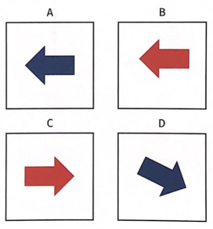

Testes de Inteligência
Aprovação Psycho – Descomplicando o Psicotécnico
Os testes de inteligência avaliam a capacidade de raciocínio lógico, espacial e abstrato.
2 Teste dos Cubos
O teste dos cubos psicotécnico avalia o raciocínio visuoespacial, simulando rotações de um cubo como o de Rubik. Esse teste mede a capacidade de manipular mentalmente imagens espaciais, formando representações visuais e prevendo rotações de faces do cubo. Composto por 15 itens com desenhos de cubos em diferentes posições, exige identificar a configuração correta após giros indicados.
Cada questão mostra um cubo inicial e opções após rotações (horário ou anti-horário) de uma ou mais faces, com limite de 30 minutos para aplicação individual ou coletiva.
Exemplo 1

Resposta: a terceira camada horizontal faz uma rotação no sentido anti-horário. Gabarito C
Exemplo 2

Resposta: a camada da parte de trás vertical faz uma rotação no sentido anti-horário. Gabarito B
BIZU
CADA BB 👶 CACA 💩 BB 👶 ABC 🔤
(de trás para frente ⬅️)
Gabarito Completo
| 1 | 2 | 3 | 4 | 5 | 6 | 7 | 8 |
|---|---|---|---|---|---|---|---|
| C | B | A | B | B | A | C | A |
| 9 | 10 | 11 | 12 | 13 | 14 | 15 | |
| C | B | B | A | D | A | C |
3 WMT-2 (Matrizes de Viena)
O WMT-2, ou Teste de Matrizes de Viena, é um instrumento psicométrico não verbal para avaliar inteligência geral por meio de raciocínio matricial. Ele consiste em 18 problemas lógicos, cada um com 8 opções de resposta, e leva cerca de 30 minutos para aplicação.
Exemplo A
Nesse exemplo há três figuras diferentes em cada linha ou coluna:
- Linha 1: triângulo, círculo e quadrado;
- Linha 2: círculo, quadrado e triângulo;
- Linha 3: quadrado, triângulo, falta o círculo. Gabarito E.
Exemplo B
Em cada linha as setas se movem no sentido horário. Na linha 3 a seta parte da horizontal, diagonal para baixo, a última deve estar totalmente para baixo. Logo o gabarito é E.
Exemplo C
Em cada linha a última figura é a soma das outras duas:
- Linha 1: 2+2 = 4
- Linha 2: 1+2 = 3
- Linha 3: 3+4 = 7, gabarito G
BIZU
🚶 Fui Dar Curso 📚 Hoje 📅
👉 E Escolhi Advocacia ⚖️
👨 Homem Habilidoso 🛠️ Estuda 📖 A Distância 💻
📅 Hoje Bebi 🥤 Fanta Fresca ❄️ Com Amor ❤️
Gabarito Completo
| 1 | 2 | 3 | 4 | 5 | 6 | 7 | 8 | 9 |
|---|---|---|---|---|---|---|---|---|
| F | D | C | H | E | E | A | H | H |
| 10 | 11 | 12 | 13 | 14 | 15 | 16 | 17 | 18 |
| E | A | D | H | B | F | F | C | A |
4 G36
O teste de raciocínio G36 é um instrumento psicométrico utilizado para avaliar a inteligência geral, especialmente o raciocínio lógico-abstrato. Ele é bastante utilizado em processos seletivos, avaliações psicológicas e contextos educacionais. O teste é composto por 36 itens, cada um apresentando uma matriz de dominós com uma peça faltando.
Exemplo 1
Explicação: Perceba que na linha 1 há duas figuras iguais, logo a linha 2 deve manter esse mesmo padrão, portanto o gabarito é o 6.
Exemplo 2

Explicação:
- Na coluna 1 temos figuras planas (duas dimensões - quadrado e triângulo);
- Na coluna 2 há uma figura em três dimensões, o cubo, que é uma figura formada por quadrados. Logo, a figura que está faltando deve ser uma figura em três dimensões formada por triângulos, a saber, a pirâmide, gabarito 6.
5 MIG (Matrizes de Inteligência Geral)
O MIG – Matrizes de Inteligência Geral Não Verbal é um teste psicológico que mede a inteligência geral, principalmente o raciocínio lógico-abstrato (inteligência fluida), sem depender de leitura ou escrita. Assim como o G36, é um teste de matrizes em que o candidato deve descobrir o padrão e encontrar a peça faltante.
Exemplo
Alternativas:
Perceba que na primeira coluna as figuras são iguais (setas azuis para esquerda). Logo, seguindo o padrão, na segunda coluna as figuras devem ser iguais. Então a resposta deve ser uma seta vermelha para direita (alternativa C).
6 R-1 (Teste Não Verbal de Inteligência)
O teste R-1 avalia a inteligência de adultos (a partir de 18 anos) com escolaridade mínima de ensino fundamental incompleto. Envolve diferentes tipos de raciocínio: complementação e identidade de figuras, analogias, progressões numéricas, deslocamento de partes, alternância de elementos e raciocínio numérico. Os itens são figuras organizadas em ordem crescente de dificuldade e o participante deve escolher a peça que completa a sequência.
Exemplo
Perceba que uma parte da figura está faltando. Logo temos que encontrar a parte que completa. Desta forma o gabarito correto é a letra C, pois ela completa a figura correta do cavalo.
7 Beta 3 Matricial (Raciocínio Matricial)
O BETA III Matricial é um teste psicológico não verbal que avalia o raciocínio lógico e a inteligência geral através de padrões visuais (matrizes), medindo a capacidade de identificar relações abstratas e completar sequências. Cada exercício apresenta uma matriz incompleta com figuras e oferece opções de múltipla escolha para completar o padrão.
Simulador Beta 3 Matricial
Pratique agora com tempo real
Baixar Beta 3 Matricial
Download do Kit (PDF)
Exemplo A
Para o problema A, você deveria ter respondido o número 5, porque é a figura igual às três figuras do quadrado acima.
Exemplo B
No Problema B, a resposta correta é o número 3 porque nos dois quadrados superiores há um triângulo em branco e um triângulo sombreado. O quadrado de baixo contém um círculo sombreado, assim um círculo em branco será colocado onde está o ponto de interrogação.
Exemplo C
A resposta correta para o problema C é o número 2. Neste problema, há três jogos iguais de quadrados que se sobrepõem, assim os quadrados que se sobrepõem no número 2 substituem o ponto de interrogação.
Exemplo D
No problema D, há dois quadrados em branco, idênticos, na parte inferior e uma cruz sombreada na parte superior. A cruz que está sombreada é idêntica à resposta do número 4 e deveria substituir o ponto de interrogação.
8 Beta 3 Códigos
BETA III Códigos refere-se ao subteste "Códigos" do BETA-III, um teste psicológico não verbal para avaliar inteligência geral e velocidade de processamento em adolescentes e adultos, onde se associam números a símbolos visuais em um tempo limitado. O examinando recebe uma folha com um código de exemplo e deve associar números a símbolos (figuras) em um tempo definido, buscando completar o maior número de itens corretamente.
Código
Exemplo Prático
9 TRI - Teste Rápido de Inteligência
O Teste Rápido de Inteligência (TRI) é um teste psicotécnico moderno e ágil, usado por psicólogos para avaliar a inteligência geral através de matrizes visuais. Mede a capacidade de compreender, resolver problemas e aprender, usando figuras geométricas para completar sequências (matrizes).
A sua tarefa é identificar qual das quatro opções abaixo (a, b, c ou d) completa o raciocínio.
Exemplo 1
No Exemplo 1, temos um círculo, um triângulo e um quadrado na primeira linha, ao passo que, na linha de baixo, temos um quadrado, um círculo e precisamos identificar qual é a figura que está faltando. Neste caso, a resposta que completa o raciocínio é a letra "a", com o triângulo. Pois as figuras de baixo são as mesmas da primeira linha, mudando apenas a ordem que aparecem.
Exemplo 2
Repare que, no Exemplo 2, na linha de cima, temos um quadrado, em seguida, um quadrado com outro dentro e, por fim, um quadrado com mais dois quadrados dentro. Na linha de baixo, temos um círculo, em seguida um círculo dentro do outro. Assim, a figura que completa a lógica é a letra "c", com um círculo e mais dois círculos dentro.
10 TRL - Teste de Raciocínio Lógico
O TRL (Teste de Raciocínio Lógico) é um teste psicológico que avalia a inteligência por meio do raciocínio lógico indutivo, usando tarefas de sequências de figuras para identificar padrões. Mede a capacidade de identificar padrões e completar sequências lógicas de figuras abstratas, sem depender de conhecimento prévio.
Exemplo

Observe que nas duas primeiras linhas há 3 figuras iguais (3 estrelas, 3 setas), portanto a última linha deve ser 3 figuras iguais. Como já existem 2 losangos, a figura que faalto é um losango, letra E.
BIZU
Ana FEDE a Bife Frito Barato no CCAA E Come Frango
(A F E D E B F B C C A A E C F)
11 TIG-NV - Teste de Inteligência Geral Não-Verbal
O Teste de Inteligência Geral Não-Verbal – TIG-NV é um teste que avalia, por meio de diferentes tipos de raciocínios, aspectos da inteligência não verbal tais como atenção, concentração, aprendizagem, conhecimento formal, orientação espacial, comportamento viso motor, memória de reconhecimento, memória operacional, percepção e flexibilidade cognitiva.
Exemplo 1
Os desenhos mostram um tipo de raciocínio. Se você somar as figuras 1 e 2, vai obter a figura 3. O mesmo acontece com as outras linhas e colunas. Se você somar as figuras 3 e 6 ou 7 e 8 vai obter o mesmo resultado, a figura que deverá ter o número 9. Você deverá descobrir qual é a resposta entre as 6 possibilidades e escrever a letra da figura correta no protocolo de respostas. No exemplo abaixo a resposta correta é a casinha com a letra D.
Exemplo 2
Neste tipo de raciocínio temos canetas, lápis e blocos de várias cores e em posições diferentes ( 2 voltados para baixo e I para cima ). Você deverá descobrir qual dos objetos deverá ter o número 9. Temos lápis branco, cinza e vermelho, blocos branco, cinza e vermelho e canetas cinza e vermelha. Portanto, a figura que deverá ter o número 9 será a caneta branca com a ponta para cima (Letra A).
DICA: Questões 21 a 30
DEAFC: Depois do Exame, Ana Foi ao Cinema.
ABCFD: Antes de Beijar, Carol Fez Doideiras